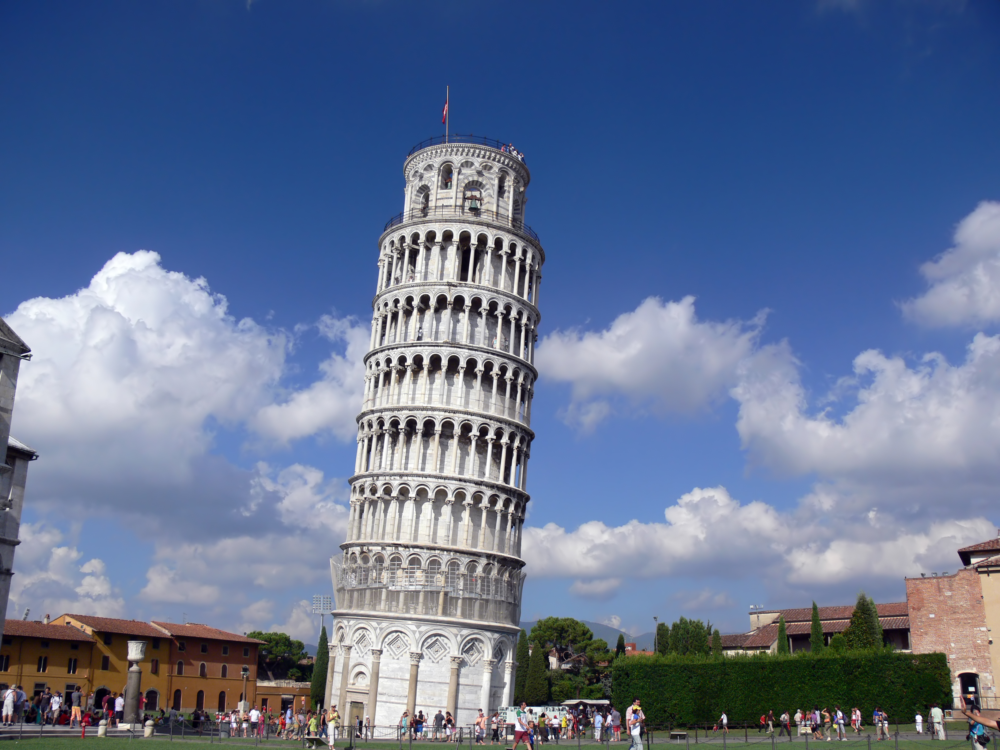

Top 5 World Destinations
The Tower of Pisa is the campanile, or freestanding bell tower, of the cathedral of the Italian city of Pisa, known worldwide for its nearly four-degree lean, the result of an unstable foundation. The tower is situated behind the Pisa Cathedral and is the third-oldest structure in the city's Cathedral Square (Piazza del Duomo), after the cathedral and the Pisa Baptistry.
